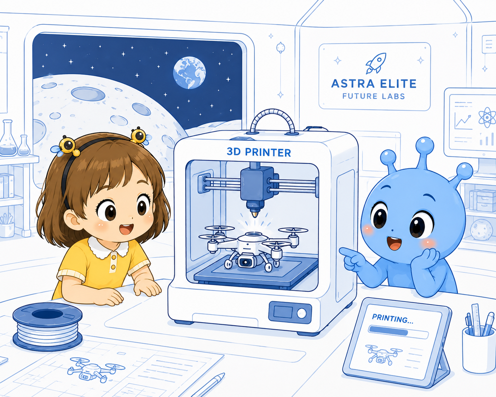

3D Printing Lab
孩子学习原型、层、材料和结构，设计一件月球基地需要的工具或零件。
Four Moon Labs
每个实验室都是一个故事场景，也是一个能力模块。孩子在 Leta 和 Milo 的陪伴下，从修复一个零件，到设计机器人、规划无人机任务，再到用空间计算展示自己的未来城市。

孩子学习原型、层、材料和结构，设计一件月球基地需要的工具或零件。
孩子设计机器人任务：搬运、巡检、陪伴、种植，并解释传感器如何帮助机器人理解环境。
孩子规划一条月球巡航路线，学习升力、信号、避障和任务报告。
孩子用空间计算思维展示城市数据、建筑模型和未来演讲画面。